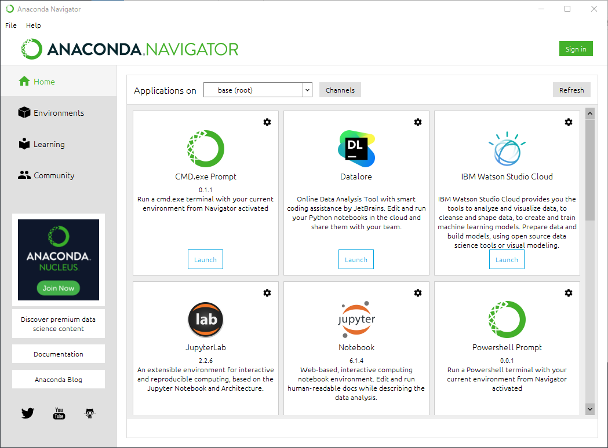

<!DOCTYPE html>
<html lang="ja">

<head>
  <meta charset="UTF-8">
  <meta name="viewport" content="width=device-width, initial-scale=1.0">

  <!-- Twitter summary card -->
  <meta name="twitter:card" content="summary" />
  <meta name="twitter:site" content="@mixnb" />
  <meta name="twitter:title" content="みちのぶのねぐら - 工作室 厚生部 政治局" />
  <meta name="twitter:image" content="https://pages.michinobu.jp/img/logo.png" />

  <link href="/main.css" rel="stylesheet">

  <!-- MathJax: https://www.mathjax.org/ -->
  <script>
    MathJax = {
      tex: {
        inlineMath: [['$', '$'], ['\\(', '\\)']]
      },
      svg: {
        fontCache: 'global'
      }
    };
  </script>
  <script src="https://polyfill.io/v3/polyfill.min.js?features=es6"></script>
  <script id="MathJax-script" async src="https://cdn.jsdelivr.net/npm/mathjax@3/es5/tex-mml-chtml.js"></script>

  <!-- highlight.js -->
  <link rel="stylesheet" href="https://cdnjs.cloudflare.com/ajax/libs/highlight.js/11.7.0/styles/base16/github.min.css">
  <script src="https://cdnjs.cloudflare.com/ajax/libs/highlight.js/11.7.0/highlight.min.js"></script>
  <script>hljs.highlightAll();</script>

  <title>Anaconda をインストールする - みちのぶのねぐら</title>
</head>

<body onload="onBodyLoading()">
  <!-- Mermaid: https://mermaid.js.org/ -->
  <script type="module">
    import mermaid from 'https://cdn.jsdelivr.net/npm/mermaid@9/dist/mermaid.esm.min.mjs';
    mermaid.initialize({ startOnLoad: true });
  </script>

  <header>
    <a href="/">
      みちのぶのねぐら</a>
    <nav>
      <ul class="categories">
        <li><a href="/t">工作室</a></li>
        <li><a href="/l">厚生部</a></li>
        <li><a href="/p">政治局</a></li>
      </ul>
    </nav>
  </header>
  <div id="main">
    <div class="content"><h1>Anaconda をインストールする</h1>
<p>Update: 2021-04-15</p>
<p>「Pythonによるプログラミング入門－東京大学教養学部テキスト－アルゴリズムと情報科学の基礎を学ぶ」ISBN: 978-4-13-062458-9 のための Python の環境として Anaconda をインストールしました。</p>
<p>Python は使ったことがあるのですが、このテキストをぱらぱらとめくってみると簡単なプログラムでグラフを描画しています。えーっと、これ、私たち、つまり、業務システムとか Web アプリとかつくっているエンジニアが知ってる Python の環境じゃないだろ？ 素の Python にどんだけパッケージ追加したらコマンドラインからいきなりグラフ描画できるのか見当つかないぞとテキストの最初のあたりを読んでみると Anaconda というのを使っていることがわかりました。そこにこのテキストで必要なものが一式入っているようです。最近の理系の学生さんはこういうのを使ってるのね。ということで、さっそく入れてみます。</p>
<h2>インストーラの入手と実行</h2>
<p>私は普段 Mac を使っているのですが、他の人といっしょにやる都合で Windows でやってみます。</p>
<p>まず <a href="https://www.anaconda.com/products/individual">https://www.anaconda.com/products/individual</a> のページの下の方から Windows の "64-Bit Graphical Installer" をダウンロードします。
<code>Anaconda3-2020.11-Windows-x86_64.exe</code> という 457MB の（でかっ）インストーラがダウンロードできました。これを実行します。</p>
<p>まず、なにかインストールするときのお約束のセキュリティの警告は「実行」を選択します。</p>
<p></p>
<p>他のアプリを終了しろとの警告が出るので、指示に従って「Next」</p>
<p></p>
<p>License agreement は読みたければ読んで「Next」</p>
<p></p>
<p>Taylor Swift が Tiny desk concert で "Just me, no dancers." と言ってたのがかっこよかったのでデフォルトの「自分用」の選択のまま「Next」</p>
<p></p>
<p>必要なディスク容量 2.7GB （でかっ）について「足りない！」みたいな警告が出てなければ「Next」</p>
<p></p>
<p>私の場合、開発用の Python を別に入れる可能性があるので 2個目のチェックボックスは Off にしました。理系の学生・研究者でなければ Off でよさそうです。 PyCharm 等の IDE の設定はそれぞれの IDE でできるでしょうし。で、「Install」ボタンを押すと、、、</p>
<p></p>
<p>サイズが大きな分、インストールに時間がかかります。終わったら「Next」</p>
<p></p>
<p>PyCharm Pro を買ってほしそうですが、とりあえず無視して「Next」</p>
<p></p>
<p>Tutorial などは後で見たければ見るので、チェックボックスはすべて Off にして「Finish」</p>
<p></p>
<p>Windows のスタートメニューにこのような項目が表示されます。
Reset Spyder Settings 以外のものを一つずつ開いてみます。</p>
<p></p>
<h2>Anaconda Navigator</h2>
<p>まず Anaconda Navigator です。ここからいろいろ起動できるようです。</p>
<p></p>
<p>Tutorial は、、、英語だ、、、</p>
<p></p>
<h2>Anaconda PowerShell Prompt</h2>
<p>次に、 Anaconda PowerShell Prompt ですが、これは要するに PowerShell のコンソールで Python が起動できる、というそれだけのものです。</p>
<pre class="highlight"><code>python3 --version[Enter]
</code></pre>

<p>を実行してみると、無い。 <code>3</code> は付かないんですね。</p>
<pre class="highlight"><code>python --version[Enter]
</code></pre>

<p>で表示されたバージョンは 3.8.5 です。新しいバージョンが入っています。
<code>python[Enter]</code> で <code>1 + 1[Enter]</code> が <code>2</code> になることを確認したら [Ctrl]+[D] ( Control キーを押しながら D を押す ) で Python を終了し、 <code>exit[Enter]</code> で PowerShell を終了します。 PowerShell の終了は右上の [X] でウィンドウを閉じるのでもいいです。</p>
<p></p>
<h2>Anaconda Prompt</h2>
<p>Anaconda Prompt は PowerShell ではなくコマンドプロンプトが起動します。 PowerShell でない以外、できることは Anaconda PowerShell Prompt と同じです。</p>
<p></p>
<h2>Jupyter Notebook</h2>
<p>Jupyter Notebook は、最初にコマンドプロンプトが表示されてしばらくすると「ブラウザか何かで開くか（意訳）？」と聞かれるので Edge でも Chrome でも好きなものを選択します。</p>
<p></p>
<p>するとフォルダの一覧が表示されます。これは <code>C\:Users\ユーザ名</code> の直下だな。</p>
<p></p>
<p>で、私はここでいきなり「New」の「Notebook」の「Python 3」を選択したのですが、この場所はよくないので、みなさんは後述する通り <code>Documents</code> の下の <code>Python Scripts</code> を開いて、そこから「New」の「Notebook」の「Python 3」を選択してください。
<code>Documents</code> の下に <code>Python Scripts</code> が無い場合は <code>Documents</code> で 「New」の「Other」の「Folder」を選択して作成してください。</p>
<p></p>
<p>するとブラウザの新しいタブが開いてこんなものが表示されます。</p>
<p></p>
<p><code>1 + 1[Enter]</code> と入力してみると、改行された。。。いや、改行じゃなくて実行したいんだけど。</p>
<p></p>
<p>改行を消して Run  ボタンを押すと無事に実行できました。</p>
<p></p>
<p>改行できるということは、複数行まとめて実行できるということかな？ と 3行ほど入力して Run  ボタンを押して実行すると、期待通りに動きます。</p>
<p></p>
<p>変数 <code>a</code> の値は覚えてくれているようです。</p>
<p></p>
<p>フロッピーディスクのボタン  ( って若い人はフロッピーディスクは知らんだろ ) を押して保存してブラウザのタブを閉じると ''Untitled.ipynb'' というファイルが保存されています。</p>
<p></p>
<p>「Running」を選択してみると、このファイル名の行に「Shutdown」ボタンがあります。何か動いているようです。</p>
<p></p>
<p>「Shutdown」ボタンを押して「Files」に戻ると表示が変わりました。</p>
<p></p>
<p>前述の通りファイルを保存する場所がよくなかったので、
<code>Documents</code> の下の <code>Python Scripts</code> からやり直します。
<code>Documents</code> の下に <code>Python Scripts</code> が無い場合は <code>Documents</code> で 「New」の「Other」の「Folder」で作成してください。「New」の「Notebook」の「Python 3」を選択して新しいノートブック（と呼ぶのかな？）を作成して、</p>
<p></p>
<p>「File」の「Rename」でファイル名を変更します。ファイル名には日付やテキストの章の番号などを付けるといいと思います。</p>
<p></p>
<p>先ほどと同じことをやって、フロッピーディスクのボタン  で保存してブラウザのタブを閉じます。</p>
<p></p>
<p>「Rename」で付けたファイル名で保存されています。これをクリックすると元通りの状態で表示されるんだろうな。そうでない場合を試してみたいので、</p>
<p></p>
<p>「Running」で「Shutdown」してみます。</p>
<p></p>
<p>表示が変わりました。これをクリックして開いてみます。</p>
<p></p>
<p>先ほどと見た目は同じものが表示されたので、変数 <code>a</code> を覚えてくれているか試してみます。 <code>a</code> を入力して Run</p>
<p> ボタンで実行するとエラーになります。覚えていません。</p>
<p></p>
<p>ブラウザを閉じて、何やら呪文がたくさん表示されているコマンドプロンプトを右上の [X] で閉じて、 Jupyter Notebook を開き直すと、 Shutdown された状態でした。</p>
<p>Jupyter Notebook 例えば学生の場合、授業１回分を１個のノートブックにするという使い方が良さそうです。
Python を開発の作業で使うようなコンソールで実行するとコンソールを閉じたらすべて消えてしまいます。こんな感じでやったことを丸ごと残しておくことができるのは、学習用にとても便利です。</p>
<p></p>
<h2>Spyder</h2>
<p>最後に Spyder を試してみます。 Spyder を起動すると「アップデートするか？」と聞かれるます。今回はとりあえず無視します。</p>
<p></p>
<p>次に Kite というツールを入れるかどうか聞かれます。詳しい説明は省略しますが、これも今回のお勉強の範囲であればどうしても欲しい感じではないので無視します。今後、本格的に仕事や研究で Python を使う場合は用途に合ったものを入れてください。 Visual Studio Code や PyCharm であれば一般的なものが最初から入っているか、入っていなくても案内が表示されるか、どちらかだと思います。</p>
<p></p>
<p>Spyder の見た目は Visual Studio Code のような IDE と同じような感じですね。左側にプログラムを書くエディタ、右側に実行結果等を表示するコンソールがあります。左側に</p>
<pre class="highlight"><code>a = 0
a = a + 1
print(a)
</code></pre>

<p>と書いて、フロッピーディクスのボタンで（これ作ったやつ絶対おやじだ）保存して、右向き三角のボタン  で実行します。</p>
<p></p>
<p>すると「実行結果をどこに表示する？」と聞かれるので、デフォルトの設定のまま「Run」ボタンを押します。</p>
<p></p>
<p>右側に <code>1</code> と表示されました。 Visual Studio Code のような IDE より手軽ですね。まとまった量のプログラムを書く場合は Jupyter Notebook ではなくこちらを使うことになります。</p>
<h2>追記: Mac にインストールする</h2>
<p>Mac でも試してみたのですが、 Anaconda Navigator, Jupyter Notebook, Spyder は Windows と見た目がほとんど同じです。</p>
<p>まず <a href="https://www.anaconda.com/products/individual">https://www.anaconda.com/products/individual</a> のページの下の方から MacOS の "64-Bit Command Line Installer" をダウンロードして、コンソールで実行します。</p>
<pre class="highlight"><code>$ cd ~/Downloads/
$ sh Anaconda3-2020.11-MacOSX-x86_64.sh
</code></pre>

<p><code>~/anaconda3</code> に一式がインストールされます。そのディレクトリの直下に <code>Anaconda-Navigator</code> というアプリがあるのでそれを実行すると Anaconda Navigator が起動します。 Jupyter Notebook と Spyder は Anaconda Navigator から起動できるのですが、単独で起動したいのだけど、、、</p>
<p>Jupyter Notebook を起動したコンソールの表示を見たところ <code>~/anaconda3/bin</code> の下の <code>jupyter_mac.command</code> を起動しているだけのようです。その <code>jupyter_mac.command</code> は同じディレクトリの <code>jupyter-notebook</code> を起動しているだけです。コンソールから</p>
<pre class="highlight"><code>$ ~/anaconda3/bin/jupyter-notebook
</code></pre>

<p>で起動できました。</p>
<p>Spyder は</p>
<pre class="highlight"><code>$ ~/anaconda3/bin/spyder
</code></pre>

<p>で起動できました。</p>
<p>アンインストールは <code>~/anaconda3</code> を消すだけでよさそうです。</p>
<h3>追記: Mac の PATH の変更</h3>
<p>Mac の場合インストーラが <code>.bash_profile</code> に Anaconda の PATH などの設定を追加します。</p>
<pre class="highlight"><code>(base) ~$ which python
/Users/michinobu/anaconda3/bin/python
(base) ~$ which python3
/Users/michinobu/anaconda3/bin/python3
(base) ~$ which python --version
/Users/michinobu/anaconda3/bin/python
(base) ~$ python --version
Python 3.8.5
(base) ~$ python3 --version
Python 3.8.5
</code></pre>

<p>これが都合悪い場合は <code>.bash_profile</code> の</p>
<pre class="highlight"><code># &gt;&gt;&gt; conda initialize &gt;&gt;&gt;
</code></pre>

<p>から</p>
<pre class="highlight"><code># &lt;&lt;&lt; conda initialize &lt;&lt;&lt;
</code></pre>

<p>までを消してください。私の場合、これを残した  <code>.bash_profile_anaconda3</code> と消した <code>.bash_profile</code> を使い分けるようにしています。</p>
<p>Tag: python</p></div>

    <footer id="footer">
      <h2>Latest Updates</h2>
      <ul id="updates"></ul>

      <h2>Contacts</h2>
      <ul id="social-media">
        <li>
          <a rel="me" href="https://toot.blue/@micmaeda"></a>
        </li>
        <li>
          <a href="https://twitter.com/mixnb"></a>
        </li>
        <li>
          <a href="https://www.facebook.com/michinobu.maeda"></a>
        </li>
        <li>
          <a href="https://www.instagram.com/michinobumaeda/"></a>
        </li>
        <li>
          <a href="https://www.tumblr.com/michinobumaeda"></a>
        </li>
        <li>
          <a href="http://mixi.jp/show_profile.pl?id=8734038"></a>
        </li>
        <li>
          <a href="mailto:michinobumaeda@gmail.com"></a>
        </li>
      </ul>

      <h2>Legal Notices</h2>
      <div id="license">
        <div class="license-logo">
          <a rel="license" href="http://creativecommons.org/licenses/by/4.0/"></a>
        </div>
        <div class="license-desc">
          This work is licensed under a
          <a rel="license" href="http://creativecommons.org/licenses/by/4.0/">Creative Commons Attribution 4.0
            International
            License</a>.
        </div>
        <div class="copyright">&copy; 2004-2023 Michinobu Maeda.</div>
        <div>
          This site is hosted on GitHub Pages:
          <a href="https://github.com/MichinobuMaeda/MichinobuMaeda.github.io">Source</a>
        </div>
      </div>
    </footer>

    <script src="/js/site.js"></script>
</body>

</html>